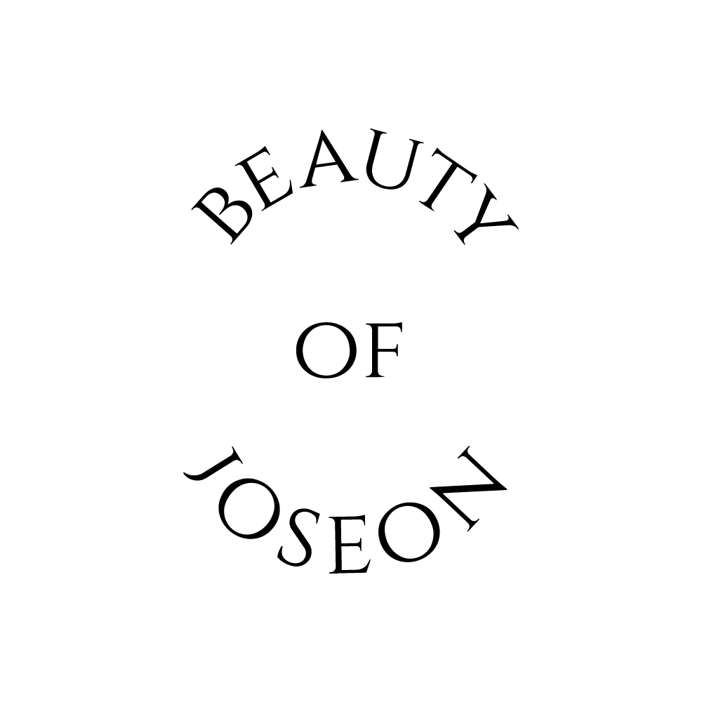

대표 로고대표 브랜드 마크
대표 로고대표 브랜드 마크홈 > 브랜드 매거진 > 마녀공장
마녀공장
마녀공장(Manyo Factory)은 2012년 설립된 한국의 클린뷰티 화장품 브랜드로, 퓨어 클렌징 오일로 유명하다.
산업 분야 뷰티·퍼스널케어 · 공개 등급 자료 기반 · 브랜드 평가 4.2 ★
한눈에 보는 브랜드
마녀공장은 2012년 3월 서울에서 자본금 5천만원으로 출발한 스킨케어 기업이다. 이듬해 선보인 퓨어 클렌징오일이 첫 전환점이 되어 국내 클렌징 강자로 자리잡았고, 2020년 일본 본격 진출이 두 번째 도약을 이끌었다.
2023년 6월 코스닥에 상장했으며, 2024년 연결 매출 1,279억원, 영업이익 185억원 규모로 성장한 인디 K뷰티 대표 주자다.
브랜드 관점
마녀공장의 차별점은 클렌징오일이라는 단일 히트 카테고리를 글로벌 진입 무기로 삼았다는 데 있다. 식물성 오일 처방으로 올리브영 클렌징 부문에서 2021년부터 2024년까지 4년 연속 1위를 지켰고, 달바·조선미녀·아누아가 경쟁하는 시장에서 클렌징 전문성이라는 좁고 선명한 포지션을 구축했다.
일본은 큐텐·라쿠텐 온라인 1위와 돈키호테 6천여 점포를 발판으로 전체 매출의 절반을 책임지는 핵심 시장이 됐다. 2023년 코스닥 상장은 자금과 브랜드 신뢰를 동시에 확보한 분기점이었으나, 2025년 매출이 1,130억원으로 11.7% 줄고 영업이익이 43.7% 감소하면서 클렌징 편중과 비중국 시장 변동성이 과제로 떠올랐다.
같은 해 사모펀드 케이엘앤파트너스가 경영권을 인수하며 운영 체제 전환과 미국·일본 중심 확장이라는 새 국면을 맞았다. 세계 2위로 올라선 K뷰티 흐름 속에서, 클렌징 의존도를 낮추고 카테고리를 넓히는 일이 다음 성장의 관건이다.
시작과 성장
2010년대 초 한국 화장품 시장은 대기업과 로드숍이 주도했고, 합리적 가격의 기능성 스킨케어 수요가 빠르게 커지고 있었다. 마녀공장은 2012년 3월 서울의 작은 사무실에서 자본금 5천만원으로 문을 열었고, 피부에 마법 같은 변화를 일으키는 화장품을 만든다는 뜻을 사명에 담았다.
창업 첫해 9개월 만에 약 20억원의 매출을 올리며 가능성을 입증했다. 첫 전환점은 2013년 출시한 퓨어 클렌징오일로, 14종 식물성 오일 처방이 입소문을 타며 시그니처 제품으로 굳어졌다.
두 번째 전환점은 2020년 일본 본격 진출이었고, 큐텐과 라쿠텐에서 잇따라 매출 1위에 오르며 해외 캐시카우를 확보했다. 이후 확장은 2016~2017년 해외 이커머스 채널과 올리브영 입점, 2018년 아마존 미국·일본 진출로 이어졌고, 2024년 코스트코·얼타, 2025년 타깃까지 오프라인 대형 유통으로 넓혀졌다.
브랜드 아이덴티티
마녀공장의 핵심 가치는 클린뷰티다. 사람 피부뿐 아니라 지구에도 부담을 덜자는 지향 아래 천연 유래 성분 중심의 자연주의 기능성 스킨케어를 표방하며, 비건과 크루얼티프리 인증 제품군을 넓혀왔다.
2021년에는 100% 비건 성분의 클린뷰티 라인 아워비건을 별도로 론칭해 윤리적 원료 생산과 친환경 공법을 강조했다. 비주얼 아이덴티티는 부드러운 곡선과 자연스러운 연결감을 살린 세리프 서체, 절제된 컬러로 공생의 메시지를 담는다.
타깃은 성분과 가치를 따지는 2030 여성을 중심으로 하며, 효능과 지속가능성을 함께 말하는 차분하고 신뢰감 있는 보이스를 지닌다.
제품과 서비스
현재 상태
운영사는 코스닥 상장사 (주)마녀공장이며 본사는 서울에 있다. 2025년 최대주주가 사모펀드 케이엘앤파트너스의 특수목적법인 케이뷰티홀딩스로 바뀌었고, 기존 최대주주이던 엘앤피코스메틱의 지분 약 51.87%가 1,900억원에 양도됐다.
거래 당시 기업가치는 약 3,700억원으로 평가됐다. 2024년 연결 매출은 1,279억원, 영업이익 185억원이었으나 2025년에는 매출 1,130억원, 영업이익 약 104억원으로 감소했다.
현 대표는 류근직이다.
타임라인
정리된 연도형 이벤트가 없습니다.
BI/CI 변천사
대표 로고대표 브랜드 마크함께 읽을 브랜드
 뷰티·퍼스널케어 · 자료 기반달바
뷰티·퍼스널케어 · 자료 기반달바달바(d'Alba)는 달바글로벌이 전개하는 대한민국의 프리미엄 비건 스킨케어 브랜드다. 2016년 론칭했으며 화이트 트러플 성분의 미스트 세럼으로 글로벌 베스트셀러를...
 뷰티·퍼스널케어 · 자료 기반아누아
뷰티·퍼스널케어 · 자료 기반아누아아누아(Anua)는 더파운더즈가 전개하는 대한민국의 저자극 스킨케어 브랜드다. 어성초를 핵심 성분으로 한 진정 토너로 미국·일본 등에서 인기를 얻은 K-뷰티 브랜드다...

뷰티·퍼스널케어 · 자료 기반조선미녀조선미녀(Beauty of Joseon)는 굿아이글로벌이 전개하는 대한민국의 한방 콘셉트 스킨케어 브랜드다. 2019년 인수 이후 조선 왕조 전통 한방과 현대적 포뮬...
 뷰티·퍼스널케어 · 디렉토리올리브영
뷰티·퍼스널케어 · 디렉토리올리브영올리브영은 대한민국의 헬스앤뷰티 리테일 브랜드입니다. 화장품, 스킨케어, 건강식품, 퍼스널케어 상품을 큐레이션하며 K뷰티 유통의 대표 접점으로 자리 잡았습니다.
 뷰티·퍼스널케어 · 매거진 완성더바디샵
뷰티·퍼스널케어 · 매거진 완성더바디샵더바디샵은 화장품을 윤리적 소비와 사회적 메시지를 담는 매개로 확장한 브랜드다. 제품의 효능만큼이나 동물실험 반대, 공정 거래, 환경 의식 같은 태도가 브랜드 선택의...
 뷰티·퍼스널케어 · 자료 기반미샤
뷰티·퍼스널케어 · 자료 기반미샤미샤(MISSHA)는 에이블씨엔씨가 운영하는 한국의 로드숍 화장품 브랜드로, 2000년 온라인 브랜드로 시작됐다.
 뷰티·퍼스널케어 · 자료 기반네이처리퍼블릭
뷰티·퍼스널케어 · 자료 기반네이처리퍼블릭네이처리퍼블릭(Nature Republic)은 2009년 설립된 한국의 자연주의 로드숍 화장품 브랜드로, 알로에 수딩 젤로 유명하다.
 뷰티·퍼스널케어 · 자료 기반더페이스샵
뷰티·퍼스널케어 · 자료 기반더페이스샵더페이스샵(The Face Shop)은 LG생활건강 계열의 자연주의 로드숍 화장품 브랜드로, 2003년 론칭했다.